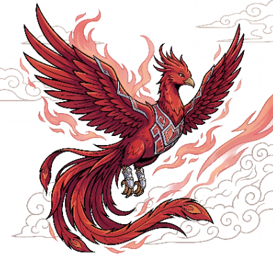
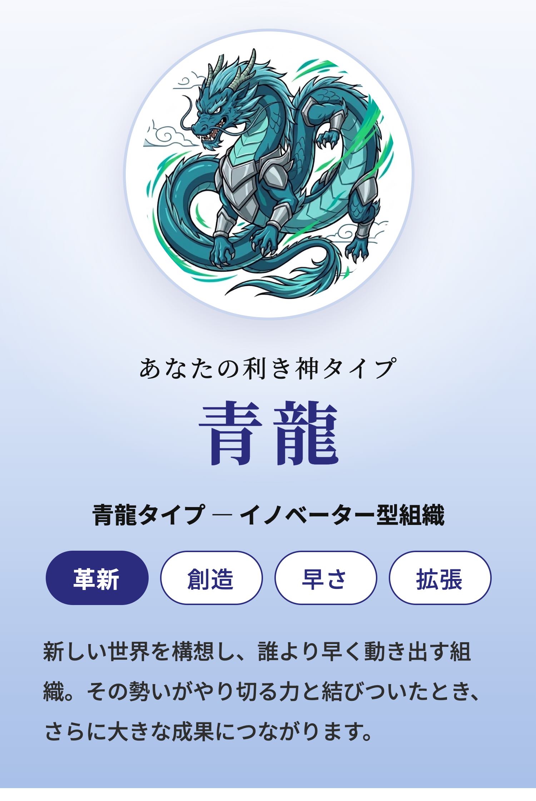
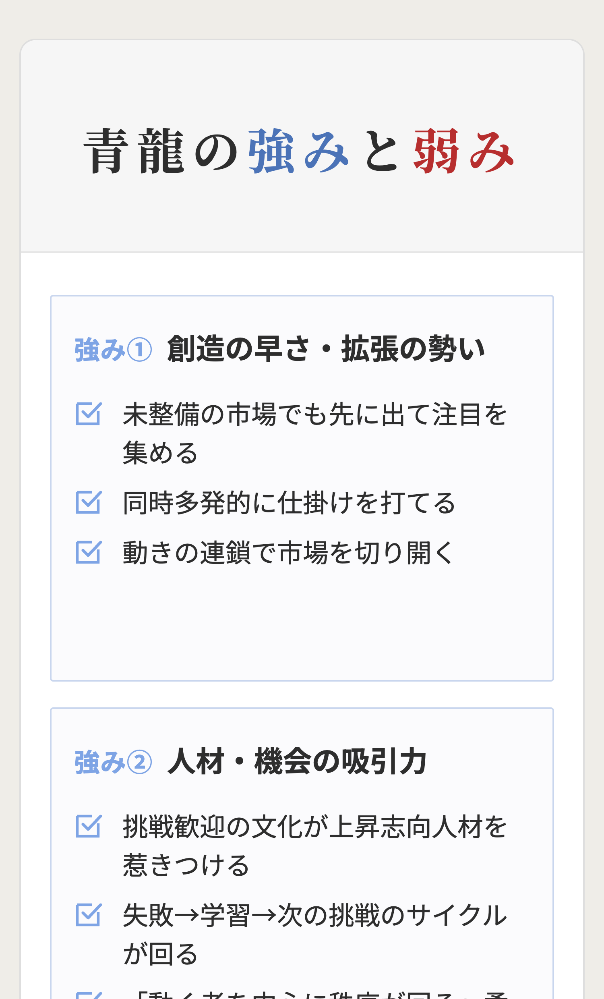
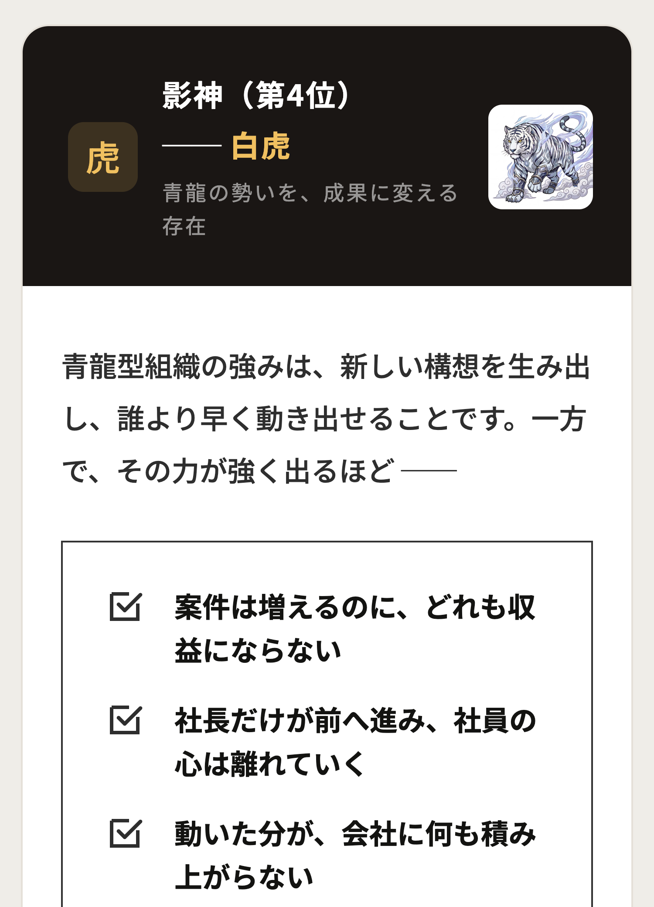

経営者のための組織診断
社長の感覚で伸ばしてきた会社が、
次の成長でつまずく理由は、
組織の"偏り"にあります。

戦略も、人材も、仕組みもある。
それでも成果が噛み合わないのは、
組織の4つの力のバランスが崩れているからかもしれません。
四神組織診断が、自社の強み・偏り・次に整えるべきテーマを可視化します。組織の4つの力の偏りかもしれません。
自社の強み・偏り・次の改善テーマがわかる
次の成長で詰まる、
本当の理由
戦略でも、人材でも、仕組みでもない。
多くの会社が次のステージで
足踏みするのは、
組織の中で、特定の力が強く出すぎ、
別の力が育っていないからです。
売上は伸びている。
だが、新しい挑戦が
形にならない。人は増えた。
だが、現場が自走しない。
仕組みは整っている。
だが、熱量が失われていく。
こうした噛み合わなさは、
能力不足ではなく、
組織が持つ4つの力の
バランスの偏りから生まれます。
組織を動かす4つの力
あらゆる組織は、4つの力で動いている
四神組織診断では、組織を動かす力を
「革新」「共創」「成果」「構造」の4つに分けて見ていきます。
春・夏・秋・冬にそれぞれの役割があるように、
この4つの力にも優劣はありません。
大切なのは、どの力が良いか悪いかではなく、
どの力が強く出すぎ、どの力が巡っていないかです。4つに分けて見ていきます。
春・夏・秋・冬に
それぞれの役割があるように、
この4つの力にも優劣はありません。
大切なのは、
どの力が良いか悪いかではなく、
どの力が強く出すぎ、
どの力が巡っていないかです。
-

青龍革新の力
新しい世界をつくり、
動きながら未来を
切り開くイノベーター型。ただし、走りすぎると形にならない。
-

朱雀共創の力
共感と関係性で人をつなぎ、
共に創るこ
とで成果を生む
ヒューマンドライブ型。ただし、空気を読みすぎると
基準が曖昧
になる。 -

白虎成果の力
勝てる領域に集中し、
やり切る力で
成果を積み上げる
プロフェッショナル型。ただし、絞りすぎると視野が狭くなる。
-

玄武構造の力
理と秩序を重んじ、
仕組みと再現性で
組織を支える
ストラクチャー型。ただし、整えすぎると動きが遅くなる。
自社で最も強く出ているのは、どの力か。
その強みは、どこで偏りに変わっているのか。
次のステージへ進むために、取り入れるべき力はどれか。
16問の診断で、あなたの組織の「今」と「次」が見えてきます。
- 自社で最も強く出ているのは、どの力か。
- その強みは、
どこで偏りに変わっているのか。 - 次のステージへ進むために、
取り入れるべき力はどれか。
16問の診断で、あなたの組織の
「今」と「次」が見えてきます。
自社の強み・偏り・次の改善テーマがわかる
診断で見える3つのこと
診断で見えるのは、
自社の勝ち筋と、
次に取り入れるべき力です。
四神組織診断では、組織の現在地を
3つの視点から可視化します。
強みの源泉、伸びしろを妨げる偏り、
次に取り入れるべき力を明らかにし、
変化の一手を具体的に示します。
診断結果の一例（青龍タイプの場合）
-
01利き神
自社の勝ち筋が見える

-
02偏りリスク
強みが制約に変わる
ポイントが見える
-
03影神
次に取り入れるべき
力が見える
偏りが見えると、
次に整えるべき打ち手が見えてきます。
偏りが見えると、
次に整えるべき打ち手が
見えてきます。
診断をおすすめする会社
こんな兆しがあるなら、
組織の偏りが
起きているかもしれません。
仕組みを整えたのに、
現場の動きが重くなった熱量はあるのに、
数字に結びつかない社員は真面目だが、
自分で判断しない新しい発想が出ず、
前例踏襲が続いている良い人材ほど、
力を発揮する前に辞めていく
戦略や人材の問題に
見えている違和感も、
実は、組織を動かす4つの力の偏りから
生まれていることがあります。
これは、戦略や人材の質だけの
問題ではありません。
会社を伸ばしてきた強みが偏り、
別の力が巡らないことで、
組織の噛み合わなさは生まれます。
必要なのは、
強みを消すことではなく、
次に取り入れる力を見立てることです。
ひとつでも当てはまるなら、
16問の診断で、
自社の偏りを一度見てみてください。
診断はかんたん3ステップ
3分で、自社の偏りを見える化できます。
専門知識や事前準備は必要ありません。
16問に答えるだけで、
あなたの組織の強み・偏り・
次に取り入れるべき力が見えてきます。
- 無料で利用可能
- 3分で完了
- 16問に答えるだけ
- 01業種を選ぶ
- 0216問に答える
- 03結果を見る
攻めるほど崩れる。
整えるほど冷える。
人を大切にすると、
成果がぼやける。
その対立を超えた先に待つのは、
完全組織
挑戦が、成果になる。
仕組みが、人を動かす。
人が、成果を生み出す。
診断は、
あなたの組織が
そこへ近づくための第一歩です。
16問で、
自社の勝ち筋と偏りを
見てみませんか。
四神組織診断で、
あなたの組織の「今」と「次」を、
3分で見える化します。
自社の強み・偏り・次の改善テーマがわかる